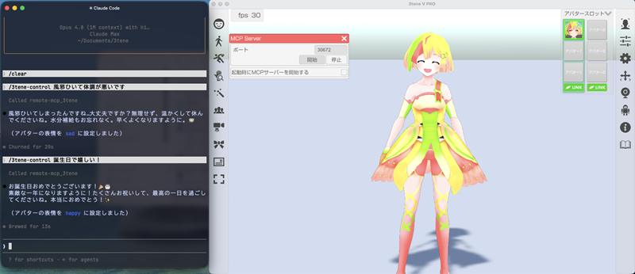
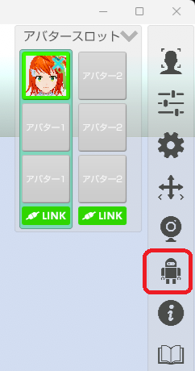
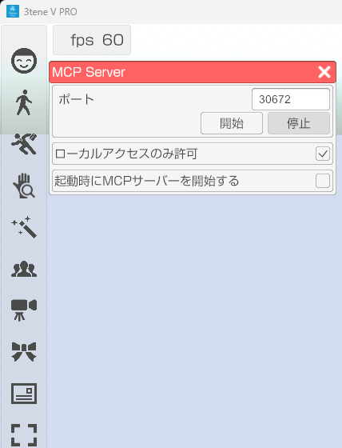

AI エージェントから 3tene を操作する MCP サーバー を搭載。
Claude Code と PicoClaw で動作するのを確認をしています。
※使用している LLM モデルによっては動作しない場合も有ります。

使用している AI エージョントによって異なるので
各ソフトウェアに合わせて設定を行ってください。
3tene を起動している PC の IP アドレスを設定してください。ポート番号 30672 です。
- 3tene を起動する。
- メニューから MCP サーバーを選択する。

- MCP サーバーを開始する

- AI エージョント を起動する。
設定が正しく行われてもセキュリティソフトにブロックされ、
正常に動作しない場合があります。
そのような場合はセキュリティソフトのファイアウォールに
通信がブロックされないように設定してください。
セキュリティソフトについて
・表情変更
・モーション
・エフェクト
・背景変更
・スクリーンショット